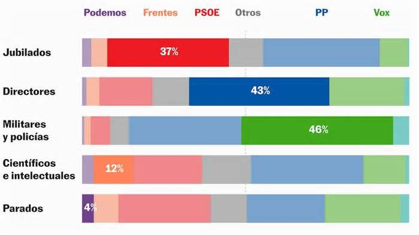

Los jubilados al PSOE y los policías a Vox: la diferencia del voto por ocupación

Los de Abascal también ganan en grupos asociados a la clase obrera. El PP se impone en más ocupaciones, pero Sánchez es el favorito de más gente. Frente Amplio obtiene su mejor dato entre intelectuales y estudiantes
La mayoría de las encuestas anticipan una victoria de la derecha en las elecciones generales del 29 de noviembre. Más allá del resultado, los datos demoscópicos permiten bajar a observar las características de los votantes. Y una de ellas es a qué se dedican y qué votan según su ocupación. En esa división, el bloque de la derecha también ganaría en casi todos los grupos, aunque con distinta fortaleza. Salvo entre los pensionistas. En el otro extremo, Vox se impone entre policías y militares.
El análisis junta las respuestas de los nueve barómetros que el CIS ha publicado en 2026 (de enero a octubre) y de la encuesta preelectoral de las generales del 29 de noviembre (más de 80.000 entrevistas). Las profesiones son las que usa el propio CIS: los grandes grupos de la Clasificación Nacional de Ocupaciones, más las situaciones de quienes no trabajan, como jubilados, estudiantes o parados.
Para el voto se cuenta solo la intención directa, es decir, el partido que cada entrevistado dice que va a votar. Quedan fuera los indecisos, la abstención, el voto en blanco y el nulo, y quienes no contestan.